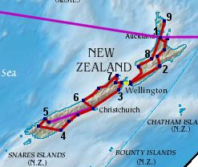

Caroline and Helen's Round-the-World Trip
World Map Page
New Zealand

We landed in Auckland [1] at the end of February, and decided to hire a car - got quite used to the
independence of our own transport in Australia!
Started out trip by heading to the Coromandel Peninsula and Whitiange, then headed down to Rotorua, experiencing geysers and Maori culture. Then we headed further south, to Lake Taupo, and then east to the coast, and Napier [2]. We passed through Mount Bruce Wildlife Sanctuary on our way to the capital, Wellington.
We then caught the ferry to Picton in the South Island, and drove on to Kaikoura [3]. From there we carried on down the coast, taking in Christchurch, Timaru and Oamaru, before arriving in Dunedin [4], supposedly a Scottish settlement that was in fact very studenty.
Leaving out the very south of the island we headed across to Te Anau, and Milford Sound [5], then on our way to Queenstown we had a small accident with the car, meaning we had to fly to Christchurch to pick another one up! We took this oppertunity to drive through Arthur's Pass, back to the west side of the island, to the Fox and Franz Josef glaciers [6].
Then we were able to pick up where we would have got to on the west coast, heading up to Punakaiki and Westport, and getting up to the most northernly point on the South Island, Farewell Spit [7]. Then we came back down to Nelson before heading back to Picton and back up to the North Island.
Having done Wellington we headed straight up to Wanganui, and then into Tongariro National Park [8]. Still going north, we bypassed Auckland to be in Paihia in the Bay of Islands [9]. Then it was back to Auckland before heading off to South America...
Sorry about this map, due to the shape of the World Map it's all on a bit of a lean, North follows the longitude line on the map
Started out trip by heading to the Coromandel Peninsula and Whitiange, then headed down to Rotorua, experiencing geysers and Maori culture. Then we headed further south, to Lake Taupo, and then east to the coast, and Napier [2]. We passed through Mount Bruce Wildlife Sanctuary on our way to the capital, Wellington.
We then caught the ferry to Picton in the South Island, and drove on to Kaikoura [3]. From there we carried on down the coast, taking in Christchurch, Timaru and Oamaru, before arriving in Dunedin [4], supposedly a Scottish settlement that was in fact very studenty.
Leaving out the very south of the island we headed across to Te Anau, and Milford Sound [5], then on our way to Queenstown we had a small accident with the car, meaning we had to fly to Christchurch to pick another one up! We took this oppertunity to drive through Arthur's Pass, back to the west side of the island, to the Fox and Franz Josef glaciers [6].
Then we were able to pick up where we would have got to on the west coast, heading up to Punakaiki and Westport, and getting up to the most northernly point on the South Island, Farewell Spit [7]. Then we came back down to Nelson before heading back to Picton and back up to the North Island.
Having done Wellington we headed straight up to Wanganui, and then into Tongariro National Park [8]. Still going north, we bypassed Auckland to be in Paihia in the Bay of Islands [9]. Then it was back to Auckland before heading off to South America...
Sorry about this map, due to the shape of the World Map it's all on a bit of a lean, North follows the longitude line on the map